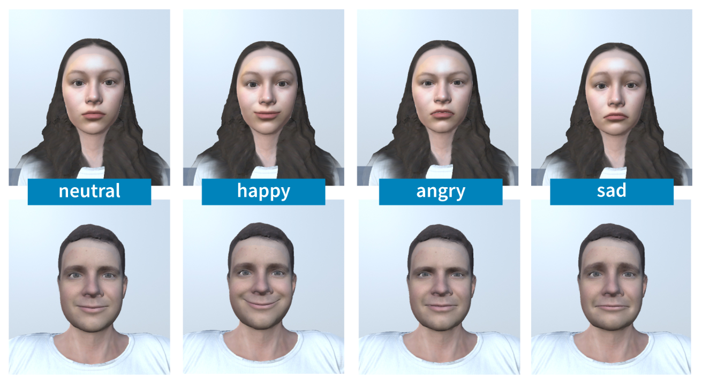

Using Expressive Avatars to Increase Emotion Recognition: A Pilot Study

Authors. Natalie Hube, Kresimir Vidackovic, Michael Sedlmair
Venue. CHI (2022) Late-Breaking Work
Type. Late-Breaking Work
Abstract. Virtual avatars are widely used for collaborating in virtual environments. Yet, often these avatars lack expressiveness to determine a state of mind. Prior work has demonstrated efective usage of determining emotions and animated lip movement through analyzing mere audio tracks of spoken words. To provide this information on a virtual avatar, we created a natural audio data set consisting of 17 audio fles from which we then extracted the underlying emotion and lip movement. To conduct a pilot study, we developed a prototypical system that displays the extracted visual parameters and then maps them on a virtual avatar while playing the corresponding audio fle. We tested the system with 5 participants in two conditions: (i) while seeing the virtual avatar only an audio fle was played. (ii) In addition to the audio fle, the extracted facial visual parameters were displayed on the virtual avatar. Our results suggest the validity of using additional visual parameters in the avatars face as it helps to determine emotions. We conclude with a brief discussion on the outcomes and their implications on future work.